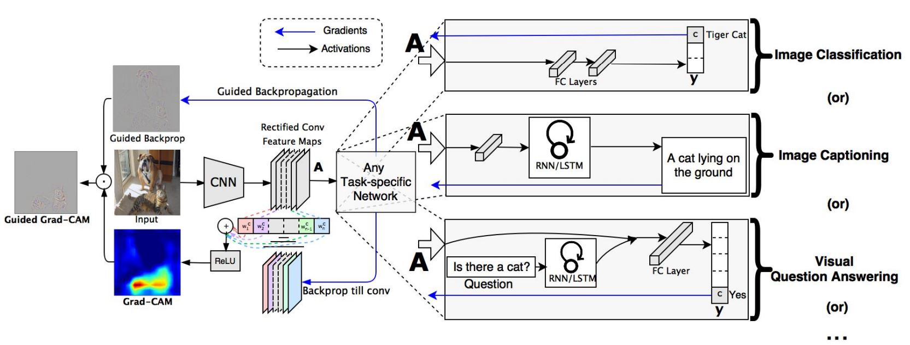
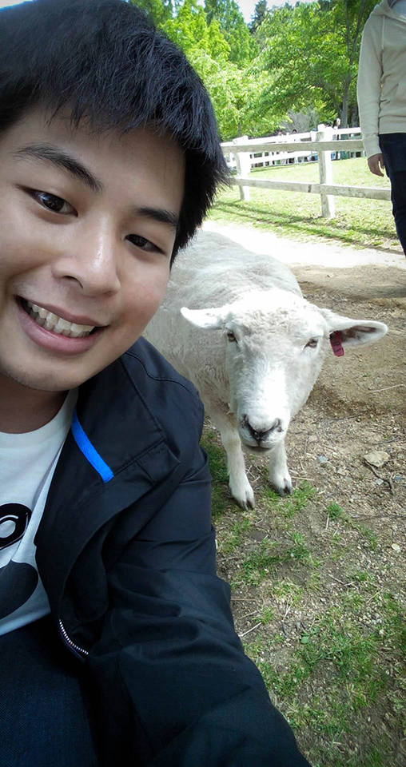
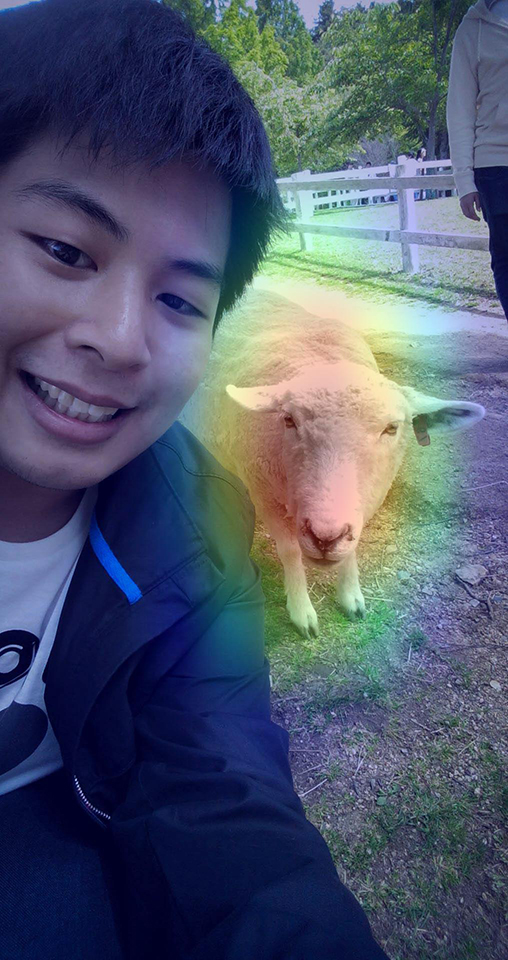

Keras-TensorFlow Implementation of Grad-CAM Class Activation Visualization

Have you ever wonder where convolutional neural network model is looking when predict a certain class? This is what Grad-CAM is for.
This implementation is adapted from Grad-CAM class activation visualization by fchollet and the technique Grad-CAM was developed by Ramprasaath R. Selvaraju. et al.

For full details about Grad-CAM technique, refer to this publication: https://arxiv.org/abs/1610.02391
Related Tools
- Keras-TensorFlow
- Xception model, pre-trained using ImageNet dataset (thanks to fchollet)
Grad-CAM technique generate a heatmap where the significant features of predicted class are located, a class activation visualization so to speak.
Setup
import numpy as np
import tensorflow as tf
from tensorflow import keras
from IPython.display import Image, display
import matplotlib.pyplot as plt
import matplotlib.cm as cm
Configure Xception model pre-trained with ImageNet dataset
model_builder = keras.applications.xception.Xception
img_size = (299, 299)
preprocess_input = keras.applications.xception.preprocess_input
decode_predictions = keras.applications.xception.decode_predictions
model = model_builder(weights="imagenet")
model.layers[-1].activation = None
The Grad-CAM algorithm to generate the Grad-CAM heatmap and create a superimposed visualization
def get_img_array(img_path, size):
img = keras.preprocessing.image.load_img(img_path, target_size=size)
array = keras.preprocessing.image.img_to_array(img)
array = np.expand_dims(array, axis=0)
return array
def make_gradcam_heatmap(img_array, model, last_conv_layer_name, pred_index=None):
grad_model = tf.keras.models.Model(
[model.inputs], [model.get_layer(last_conv_layer_name).output, model.output]
)
with tf.GradientTape() as tape:
last_conv_layer_output, preds = grad_model(img_array)
if pred_index is None:
pred_index = tf.argmax(preds[0])
class_channel = preds[:, pred_index]
grads = tape.gradient(class_channel, last_conv_layer_output)
pooled_grads = tf.reduce_mean(grads, axis=(0, 1, 2))
last_conv_layer_output = last_conv_layer_output[0]
heatmap = last_conv_layer_output @ pooled_grads[..., tf.newaxis]
heatmap = tf.squeeze(heatmap)
heatmap = tf.maximum(heatmap, 0) / tf.math.reduce_max(heatmap)
return heatmap.numpy()
def save_and_display_gradcam(img_path, heatmap, cam_path="cam.jpg", alpha=0.4):
img = keras.preprocessing.image.load_img(img_path)
img = keras.preprocessing.image.img_to_array(img)
heatmap = np.uint8(255 * heatmap)
jet = cm.get_cmap("jet")
jet_colors = jet(np.arange(256))[:, :3]
jet_heatmap = jet_colors[heatmap]
jet_heatmap = keras.preprocessing.image.array_to_img(jet_heatmap)
jet_heatmap = jet_heatmap.resize((img.shape[1], img.shape[0]))
jet_heatmap = keras.preprocessing.image.img_to_array(jet_heatmap)
superimposed_img = jet_heatmap * alpha + img
superimposed_img = keras.preprocessing.image.array_to_img(superimposed_img)
superimposed_img.save(cam_path)
display(Image(cam_path))
Prepare a test image
img_path = keras.utils.get_file(
"test_image_01.jpg", "https://i.imgur.com/w4bkT7P.jpg"
)
img_array = preprocess_input(get_img_array(img_path, size=img_size))
display(Image(img_path))
test image: 
Predict a class from the test image
preds = model.predict(img_array)
print("Predicted:", decode_predictions(preds, top=1)[0])
Predicted output
Predicted: [('n02412080', 'ram', 9.088227)]
Generate an Activation Heatmap of the Predicted Class
save_and_display_gradcam(img_path, heatmap)
The class activation heatmap over the original image: 
Voilà! That red color region is where the “ram” feature located. Now we finally know what Convolutional Neural Network was looking at when they predict the class “ram”.
What is “ram” anyway. I’ve always thought it’s a “sheep” that I took a selfie with!!! XD
By the way, stay tuned! next time I will implement more about popular computer vision techniques like
- Transfer Learning
- Object Detection
- Image segmentation etc.
Nuttapong La-ongtup
“If I have seen further it is by standing on the shoulders of Giants” - Isaac Newton